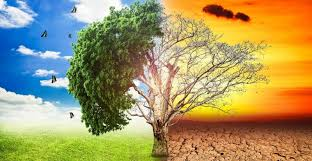
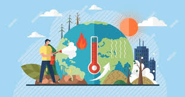

Causas del aumento de las emisiones
1.La generación de energía
La generación de electricidad y calor a través de los combustibles fósiles provoca una gran cantidad de emisiones globales.
La mayoría de la electricidad se genera todavía con la combustión de carbón o gas, lo que produce dióxido de carbono y óxido
nitroso, que son potentes gases de efecto invernadero que cubren el planeta y atrapan el calor proveniente del sol. A nivel global, algo más de un cuarto de la electricidad proviene de fuentes
de energía renovables eólicas y solares que, al contrario que los combustibles fósiles, emiten poca o ninguna cantidad de gases o contaminantes en el aire.
2.Productos de fabricación
La industria y las fábricas producen emisiones, en su mayoría provenientes de la quema de combustibles fósiles destinada a generar energía para la fabricación
de cemento, hierro, acero, componentes electrónicos, ropa y otros bienes. La minería y otros procesos industriales también generan gases,
de la misma forma que lo hace el sector de la construcción. La maquinaria utilizada en los procesos de fabricación a menudo realizados
mediante carbón, petróleo o gas, y con algunos materiales, como los plásticos, están compuestos de sustancias
químicas derivadas de los combustibles fósiles. La industria manufacturera es una de las que más contribuyen a
las emisiones de gases de efecto invernadero a nivel mundial.
3.La tala de los bosques
La tala de bosques a fin de crear granjas o pastos, o por otros motivos, provoca emisiones dado que cuando
se talan sus árboles se libera el carbono que estos han estado almacenando. Cada año se destruyen aproximadamente
12 millones de hectáreas de bosques. Puesto que los bosques absorben el dióxido de carbono, su destrucción
también limita la capacidad de la naturaleza para mantener estas emisiones fuera de la atmósfera. La deforestación,
junto con la agricultura y otros cambios en la utilización de los suelos, es responsable de aproximadamente un cuarto de las emisiones de gases de efecto invernadero.
4.El uso del transporte
La mayoría de camiones, barcos y aeronaves funcionan con combustibles fósiles. Esto hace que el transporte sea uno de los sectores
que más contribuyen a generar gases de efecto invernadero, especialmente en lo que a emisiones de dióxido de carbono se refiere.
Los vehículos terrestres son responsables de la mayor parte, debido a la combustión de productos derivados del petróleo, como la
gasolina, en los motores de combustión interna. Sin embargo, las emisiones provenientes de barcos y aeronaves siguen aumentando.
El transporte es responsable de cerca de un cuarto de las emisiones de dióxido
de carbono relacionadas con la energía a nivel global. Y la tendencia es que continúe este
importante aumento del uso de la energía para el transporte durante los próximos años.
5.La producción de alimentos
La producción de alimentos provoca emisiones de metano, dióxido de carbono y otros gases de efecto invernadero, de diferentes maneras, en lo que se
incluye la deforestación y la roturación de tierras para la agricultura y el pastoreo, la alimentación del ganado bovino y ovino, la producción y uso d
e fertilizantes y el abono utilizado para los cultivos, además del uso de la energía que hace funcionar el equipo de las
granjas o los barcos pesqueros, siendo normalmente con combustibles fósiles Todo esto hace que la producción de alimentos
sea uno de los sectores que más contribuyen al cambio climático. Además, las emisiones de efecto invernadero también provienen
del envasado y la distribución de los alimentos.
6.La energía en los edificios
A nivel global, tanto los edificios residenciales como los comerciales consumen más de la mitad de la electricidad total.
Como siguen utilizando carbón, hidrocarburos y gas natural para los sistemas de calefacción y climatización,
emiten cantidades importantes de gases de efecto invernadero. La creciente demanda de sistemas de calefacción y
climatización, junto con el aumento en la adquisición de aparatos de aire acondicionado y en consumo eléctrico por parte de aparatos
de iluminación y dispositivos conectados, ha contribuido a un aumento en las emisiones de dióxido de carbono relacionadas con la energía
y que tiene su origen en las edificaciones, en los últimos años.
7.Un consumo excesivo
Su hogar, el uso que hace de la energía, el modo de desplazarse, lo que come, lo que derrocha, todo ello afecta a la emisión de gases de efecto invernadero.
Y lo mismo ocurre con el consumo de bienes como la ropa, los componentes electrónicos y los productos fabricados en plástico. Un gran porcentaje de las emisiones
de gases de efecto invernadero están ligadas a los hogares particulares. Nuestro estilo de vida tiene un profundo impacto en el planeta. Los más ricos son los que
tienen mayor responsabilidad: el 1 por ciento de la población mundial con mayor riqueza, en conjunto genera más emisiones de gases de efecto invernadero que el
50 por ciento más pobre.

